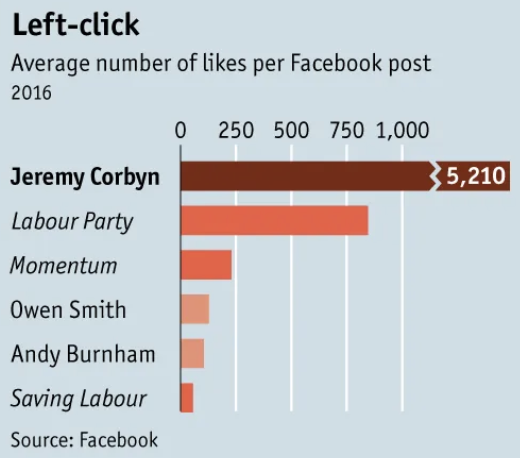

Wen Qi LOH
Countries like Pakistan and Myanmar have disproportionately few athletes for their large population sizes relative to the rest of the world.
A common gripe of consumers in the UK, but compared with the rest of Europe, a VAT of 20% turns out to be pretty standard.
The 2011 Fukushima Nuclear Disaster was a critical turning point in Japan's nuclear strategy. Its nuclear generation has returned nowhere near pre-disaster levels.
There has been a massive and sustained push for renewable energy generation in China, with increasing year-on-year output levels.
Sustainable economic growth: Renewable energy sources provide an avenue for governments to protect the Earth without overly compromising economic growth.
Energy demand has grown worldwide in the past six decades. Since it may be difficult to reduce consumption, transitioning to renewable energy may be more viable, especially for Asia Pacific.
Despite growing awareness and adoption of renewable energy sources, the share of renewable energy in total energy consumption worldwide has largely stagnated at around 25-30% in the past two decades.
Screenshot of a graph from a The Economist article The metamorphosis: How Jeremy Corbyn took control of Labour.
As close to the original as I could.
Extended the X axis to just greater than 5210. Made the title more insightful. Corrected the sequential single-hue scheme of the bars. Removed the redundant "Source: Facebook".
Link to Google colab here
I initially tried to scrape Amazon and Viator, but found that the data was rather inaccessible behind a wall of code meant to prevent scraping. The M&S website was more accessible.
Link to Google colab here
This map shows the distribution of positive COVID cases (choropleth) and fatalities (points) across Japan over a 2-year period.
An interactive chart of the cost of making a beef burger over the years using a recipe on Tesco's website. Click on the legend to focus on a specific ingredient.
Pork sausages form part of the British basket of staple goods. This map shows how its price has risen across the UK.